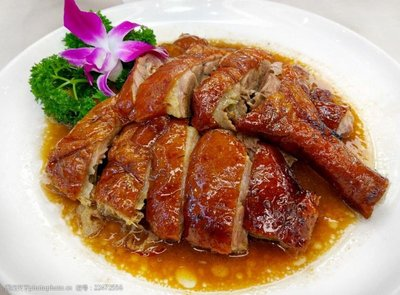

菜品介绍
烧鹅是粤菜中的经典烧味，以其皮脆肉嫩、色泽红润、香味浓郁而著称。正宗的烧鹅选用优质黑棕鹅，经过腌制、充气、烫皮、风干和烤制等多道工序，才能达到外皮酥脆、肉质鲜嫩多汁的完美口感。
烧鹅的最佳食用部位是鹅腿和鹅胸，搭配特制的酸梅酱，酸甜可口，既能解腻又能提升鹅肉的鲜美。
烹饪精髓
烧鹅的烹饪精髓在于"皮脆肉嫩"。通过充气使皮肉分离，烫皮使鹅皮收缩，风干使表皮干燥，最后烤制时高温使鹅皮变得酥脆。 烤制过程中需要不断转动鹅身，使其受热均匀，达到外皮金黄酥脆、肉质鲜嫩多汁的效果。
历史背景
烧鹅起源于广东，已有数百年历史。最早是广东地区的节庆美食，后来逐渐成为日常餐桌上的佳肴。
在粤港澳地区，烧鹅是烧味店的必备菜品，也是衡量一家烧味店水准的重要标准。传统的烧鹅采用明炉烤制，使用荔枝木等果木为燃料，赋予鹅肉特殊的果香味。
制作步骤
1选鹅与处理
选用3-4公斤的黑棕鹅，宰杀洗净后，去除内脏和杂毛，保持鹅皮完整。
2腌制
将五香粉、盐、糖、沙姜粉等调料混合均匀，涂抹在鹅腔内，腌制2小时以上。
3充气与缝针
在鹅皮与肉之间充气，使皮肉分离。然后用钢针缝合鹅腔开口，防止调料流出。
4烫皮与上糖水
将鹅放入沸水中烫约1分钟，使鹅皮收缩。然后均匀涂抹糖水（麦芽糖和白醋混合液）。
5风干
将鹅挂在通风处风干8-12小时，直至表皮完全干燥。
6烤制
将鹅放入预热至200°C的烤炉中，先烤40分钟，然后翻面再烤20分钟，直至表皮金黄酥脆。

食材清单
主料
- 黑棕鹅 1只(约3-4kg)
腌料
- 五香粉 2汤匙
- 盐 3汤匙
- 白糖 2汤匙
- 沙姜粉 1汤匙
- 蒜蓉 1汤匙
糖水
- 麦芽糖 100克
- 白醋 200毫升
- 大红浙醋 50毫升
营养信息
* 营养信息为每100克估算值，实际数值可能因食材和烹饪方式有所不同
烹饪技巧
- 选择优质黑棕鹅，肉质更加鲜嫩多汁
- 充气要均匀，使皮肉完全分离
- 风干时间要足够，确保表皮完全干燥
- 烤制时温度要控制得当，避免外焦里生
- 烤制过程中要不断转动鹅身，使其受热均匀